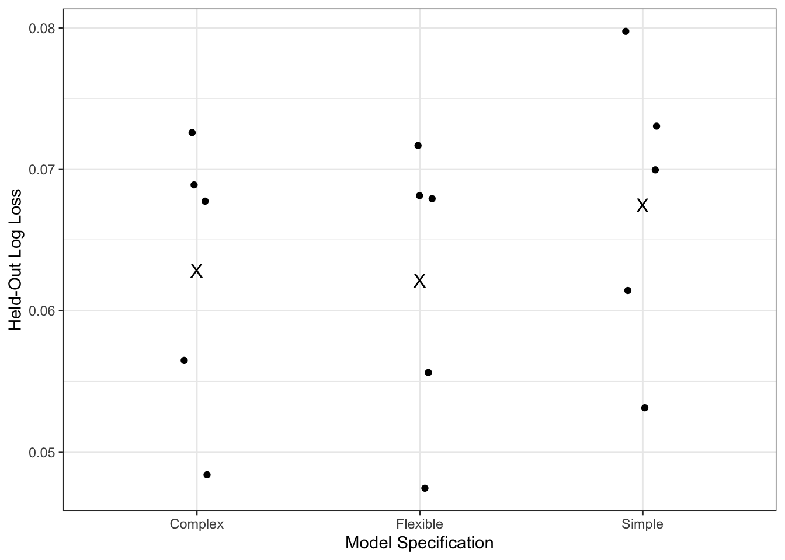

# clear environment
rm(list = ls())
# load packages
library(readr)
library(dplyr)
library(tidyr)
library(ggplot2)
library(AUC)
# set seed for reproducibility
set.seed(9692)
# load data
vdem <- read.csv("ert.csv")Lab 4: GLMs: fitting and interpretation
GLMs: Fitting and Interpretation
So far, we’ve worked entirely with binomial models when it comes to fitting glm(). Today, we’re going to take a slightly broader look at the generalized linear model framework underlying those models. This will be helpful for next week when we turn to using glm() to fit count, ordered, and multinomial models.
We’ll connect the pieces of a GLM directly to the arguments we provide to glm(). We’ll then look more closely at what predict() returns from a fitted GLM and how transformations of our variables affect interpretation. Finally, we’ll return to a point from last week’s lab: evaluating a model using the same observations used to estimate it tells us about in-sample performance. We’ll use k-fold cross-validation to compare how alternative model specifications perform on observations that were not used to estimate them, or out-of-sample performance.
Throughout lab today, we’ll continue working with a binary dependent variable. Using the Episodes of Regime Transformation (ERT) from the V-Dem data, we will fit models to evaluate: what predicts whether a country will begin an episode of autocratization in the following year?
For today’s lab, we’ll work with the V-Dem Episodes of Regime Transformation (ERT) dataset. Install packages and load the V-Dem ERT data (The data and the codebook are available on Canvas). Each observation is a country-year. Our outcome, aut_pre_ep_year, equals 1 in the year immediately before an autocratization episode begins and 0 otherwise. An autocratization episode is a period of substantial and sustained decline on V-Dem’s Electoral Democracy Index (EDI).
To answer this question, we’ll focus on several predictors:
v2x_polyarchy: the Electoral Democracy Index, which ranges from 0 to 1reg_type: whether the current regime is an autocracy or democracyreg_start_year: the year the current regime beganyear: the year of the observation
Before fitting any models, create the variables we’ll use throughout the lab. We will rescale the Electoral Democracy Index so that a one-unit increase corresponds to a 0.10 increase on the original 0-1 scale. We will also calculate the age of the current regime, take the log of regime age, and center year around its sample mean. We’ll return to these concepts later.
# construct variables for today's lab
ert_data <- vdem %>%
transmute(
country_id,
year,
aut_pre_ep_year,
v2x_polyarchy,
reg_type,
reg_start_year,
# one unit now represents a 0.10 increase in EDI
edi_10 = 10 * v2x_polyarchy,
# number of years since current regime began
regime_age = year - reg_start_year
) %>%
mutate(
# log(1 + regime age) so regimes with age 0 remain defined
log_regime_age = log(regime_age + 1),
# center year around the sample mean
year_centered = year - mean(year, na.rm = TRUE)
) %>%
drop_na()
# inspect binary outcome
table(ert_data$aut_pre_ep_year)
#>>>
#>>> 0 1
#>>> 19498 262Question: What does an observation with aut_pre_ep_year = 1 represent?
Response: A country-year coded 1 is the year immediately before an autocratization episode begins.
Parts of the GLM Framework
So far, we have used glm() as a function for estimating logit and probit models. But the glm() is implementing a more general modeling framework which is flexible beyond these binomial models, as will be the focus of next week’s lab. A generalized linear model has three basic pieces.
First, we specify a probability distribution for the outcome, also known as the random component. In today’s model, our dependent variable is binary, so we use the binomial distribution.
Second, we specify the linear combination of our predictors and coefficients, also known as the systematic component. This should look familiar:
\[ \eta_i = X_i\beta. \]
Third, we use a link function to connect the expected value of the outcome to that linear predictor:
\[ g(\mu_i) = \eta_i. \]
For a binary logit model, \(\mu_i = p_i\), so the model can be written as:
\[ \log\left(\frac{p_i}{1-p_i}\right)=X_i\beta. \]
Let’s fit a simple logit model predicting whether an autocratization episode begins in the following year. The primary predictors we will use the variables we created previously: edi_10, log_regime_age, and reg_type.
# estimate a simple logit model
model_logit <- glm(
aut_pre_ep_year ~
edi_10 +
log_regime_age +
reg_type,
data = ert_data,
family = binomial(link = "logit")
)
# examine results
summary(model_logit)
#>>>
#>>> Call:
#>>> glm(formula = aut_pre_ep_year ~ edi_10 + log_regime_age + reg_type,
#>>> family = binomial(link = "logit"), data = ert_data)
#>>>
#>>> Coefficients:
#>>> Estimate Std. Error z value Pr(>|z|)
#>>> (Intercept) -5.22502 0.21822 -23.944 <2e-16 ***
#>>> edi_10 0.51432 0.04676 10.999 <2e-16 ***
#>>> log_regime_age -0.10484 0.05147 -2.037 0.0416 *
#>>> reg_type -2.30420 0.27835 -8.278 <2e-16 ***
#>>> ---
#>>> Signif. codes: 0 '***' 0.001 '**' 0.01 '*' 0.05 '.' 0.1 ' ' 1
#>>>
#>>> (Dispersion parameter for binomial family taken to be 1)
#>>>
#>>> Null deviance: 2785.8 on 19759 degrees of freedom
#>>> Residual deviance: 2649.2 on 19756 degrees of freedom
#>>> AIC: 2657.2
#>>>
#>>> Number of Fisher Scoring iterations: 7The pieces of the GLM framework map directly onto the arguments we provide to glm():
The model formula specifies the systematic component, \(X\beta\), or our predictors of interest.
binomial()specifies the distribution of the outcome, or the random component.link = "logit"specifies the link function connecting the expected outcome to the linear predictor.
The Link Function
In a glm, what the link function does is transform the conditional mean of the outcome. For a binary dependent variable:
\[ E[Y_i|X_i] = P(Y_i = 1|X_i) = p_i. \]
The logit link then relates that probability to the linear predictor:
\[ \log\left(\frac{p_i}{1-p_i}\right)=X_i\beta. \]
Predictions from a GLM
The distinction between the linear predictor and the expected outcome also determines what predict() returns from a fitted GLM.
First, generate predictions using type = "link".
# generate predictions on the link scale
pred_link <- predict(
model_logit,
type = "link"
)
# inspect first few values
head(pred_link)
#>>> 1 2 3 4 5 6
#>>> -4.587266 -4.742231 -4.784741 -4.814903 -4.838299 -4.857414For a logit model, these are predicted log-odds. They correspond to the linear predictor:
\[
X_i\hat{\beta}.
\] Now generate predictions using type = "response".
# generate predictions on the response scale
pred_response <- predict(
model_logit,
type = "response"
)
# inspect first few values
head(pred_response)
#>>> 1 2 3 4 5 6
#>>> 0.010078048 0.008643809 0.008287036 0.008042796 0.007858277 0.007710637For a binary model, these values are predicted probabilities. R gets from the first set of predictions to the second by applying the inverse of the link function. For a logit model, the inverse link is the inverse-logit transformation, which we can apply using plogis() (which we have already done in previous labs).
# manually transform link-scale predictions into probabilities
pred_manual <- plogis(pred_link)
# compare the three quantities
head(
cbind(
Link = pred_link,
Manual_Response = pred_manual,
Response = pred_response
)
)
#>>> Link Manual_Response Response
#>>> 1 -4.587266 0.010078048 0.010078048
#>>> 2 -4.742231 0.008643809 0.008643809
#>>> 3 -4.784741 0.008287036 0.008287036
#>>> 4 -4.814903 0.008042796 0.008042796
#>>> 5 -4.838299 0.007858277 0.007858277
#>>> 6 -4.857414 0.007710637 0.007710637So, the basic relationship is:
\[ X\hat\beta \xrightarrow{g^{-1}(\cdot)} \hat p. \]
type = "link" returns the left-hand side. type = "response" applies the inverse link and returns the right-hand side.
Question: Suppose we changed the link from logit to probit. Would type = “response” still return probabilities? Would type = “link” still return log-odds?
Response: type = “response” would still return probabilities. type = “link” would no longer return log-odds; it would return predictions on the probit link scale.
Transforming Predictor Variables
Transformations can also change how we interpret explanatory variables. Unlike the link function, which transforms the expected outcome, these are transformations we explicitly make to variables before or while fitting the model. Often we’ll do this based on substantive understanding of the data and what transformations make sense in the context of our research question. We’ll also do this for ease of interpretation, as you’ll see below.
Rescaling a Predictor
The original Electoral Democracy Index (EDI) ranges from 0 to 1. A one-unit increase in v2x_polyarchy therefore represents moving across the entire scale. While this is technically valid, it may not be the most useful substantive unit because countries are rarely, if ever, moving from one extreme of the EDI to the other. Earlier, we constructed a transformation of the v2x_polyarchy variable:
# inspect relationship between original and rescaled EDI
head(
ert_data %>%
select(v2x_polyarchy, edi_10)
)
#>>> v2x_polyarchy edi_10
#>>> 1 0.124 1.24
#>>> 2 0.108 1.08
#>>> 3 0.108 1.08
#>>> 4 0.108 1.08
#>>> 5 0.108 1.08
#>>> 6 0.108 1.08Because edi_10 = 10 * v2x_polyarchy, a one-unit increase in edi_10 corresponds to a 0.10 increase in the original EDI. By rescaling this variable, we do not fundamentally change the relationship estimated by the model, however it does change the units in which the coefficient is expressed.
Logging a Predictor
Previously, we also transformed regime age:
\[ \text{log\_regime\_age} = \log(\text{regime\_age}+1). \]
Once we do this, the coefficient is associated with a one-unit increase in the logged predictor rather than a one-year increase in regime age. This is one reason predicted values are often useful when working with transformed predictors. For example, suppose we want predictions for democratic regimes with ages of 1, 10, and 50 years while holding EDI constant at 0.60.
# create hypothetical observations
prediction_data <- data.frame(
edi_10 = 6,
log_regime_age = log(c(1, 10, 50) + 1),
reg_type = 1
)
# generate predicted probabilities
prediction_data$predicted_probability <- predict(
model_logit,
newdata = prediction_data,
type = "response"
)
prediction_data
#>>> edi_10 log_regime_age reg_type predicted_probability
#>>> 1 6 0.6931472 1 0.010814755
#>>> 2 6 2.3978953 1 0.009060729
#>>> 3 6 3.9318256 1 0.007725081Question: Why can predicted probabilities be easier to communicate than the raw coefficient on log_regime_age?
Response: The raw coefficient corresponds to a one-unit increase in the logged predictor. Predicted probabilities let us compare substantively meaningful values of regime age on the probability scale.
Evaluating Models: Out of Sample Prediction
Last week, we evaluated a model using predictions for the same observations that were used to estimate it. Specifically, we focused on the Area Under the Receiver Operating Characteristic Curve (AUROC/ROC). Those metrics are useful for telling us about the in-sample performance of our model.
However, suppose we are comparing several possible model specifications. A more complicated model can often fit the data used to estimate it better simply because it has more flexibility. That does not necessarily mean it will perform better on new observations, or out-of-sample prediction.
This creates an important distinction:
Training performance asks how well a model performs on observations used to estimate it.
Test performance asks how well the model performs on observations that were not used to estimate it.
K-fold cross-validation gives us a way to approximate test performance while still using all of our observations for both training and evaluation at different points.
K-Fold Cross-Validation
The basic idea behind k-fold cross-validation is to divide our data into \(k\) groups, or folds. We then:
Hold out one fold as test data.
Estimate the model using the remaining folds.
Generate predictions for the held-out observations.
Evaluate those predictions.
Repeat until each fold has served as the test data once.
Today, we’ll use 5-fold cross-validation. Because the V-Dem ERT data contain repeated observations of the same countries over time, we will assign countries, rather than individual country-years, to folds. This ensures that when a country is in the test fold, none of its observations were used to estimate that version of the model.
# identify countries in estimation sample
country_folds <- data.frame(
country_id = unique(ert_data$country_id)
)
# randomly assign countries to one of five folds
country_folds$fold <- sample(
rep(
1:5,
length.out = nrow(country_folds)
)
)
# merge fold assignment onto country-year data
ert_data <- ert_data %>%
left_join(
country_folds,
by = "country_id"
)
# inspect number of countries assigned to each fold
country_folds %>%
count(fold)
#>>> fold n
#>>> 1 1 37
#>>> 2 2 37
#>>> 3 3 37
#>>> 4 4 36
#>>> 5 5 36Example with One Fold
Before writing a loop, let’s walk through the process using fold 1 as the test data.
# training data include folds 2 through 5
train_data <- ert_data %>%
filter(fold != 1)
# test data contain only fold 1
test_data <- ert_data %>%
filter(fold == 1)
# estimate model using only training data
kfold_model <- glm(
aut_pre_ep_year ~
edi_10 +
log_regime_age +
reg_type,
data = train_data,
family = binomial(link = "logit")
)
# predict outcomes for observations not used to estimate model
test_data$predicted_probability <- predict(
kfold_model,
newdata = test_data,
type = "response"
)
# inspect predictions
head(
test_data %>%
select(
country_id,
year,
aut_pre_ep_year,
predicted_probability
)
)
#>>> country_id year aut_pre_ep_year predicted_probability
#>>> 1 28 1900 0 0.005330797
#>>> 2 28 1901 0 0.004966984
#>>> 3 28 1902 0 0.004765733
#>>> 4 28 1903 0 0.004627885
#>>> 5 28 1904 0 0.004523701
#>>> 6 28 1905 0 0.004440312Question: Were the observations in test_data used to estimate cv_model? Why is this different from evaluating predictions from a model using the same observations that were used to estimate it?
Response: No. The model was estimated only using observations in folds 2 through 5. These predictions are generated for observations the model did not see during estimation, so they provide an out-of-sample evaluation of the fitted model.
Evaluating Predictions with Log Loss
We need a quantity that tells us how well the model predicted the held-out outcomes. Today, we’ll use log loss.
Log loss evaluates the probabilities a model assigns to the outcomes that actually occur. Recall from our discussion of maximum likelihood that, for a binary outcome, each observation contributes either:
\(p_i\) if \(Y_i = 1\),
or
\(1-p_i\) if \(Y_i = 0\).
In other words, what matters is the probability the model assigned to the observed outcome. If an observation has \(Y_i = 1\) and the model predicts \(\hat{p}_i = 0.90\), the model assigned a high probability to what actually happened. If the model instead predicts \(\hat{p}_i = 0.10\), it assigned a very low probability to what actually happened.
Log loss takes the negative log of this probability:
\[ -\left[ Y_i \log(\hat{p}_i) + (1-Y_i)\log(1-\hat{p}_i) \right]. \]
We then average this quantity across all observations in the test sample.
There are two important things to remember when interpreting log loss:
Lower values indicate better predictive performance. A model receives relatively little penalty when it assigns a high probability to the outcome that actually occurs.
Confidently wrong predictions receive especially large penalties. Predicting a probability near 1 for an outcome that turns out to be 0, or near 0 for an outcome that turns out to be 1, produces a large log loss.
For example, suppose the observed outcome is \(Y_i = 1\). If our model predicts a probability of 0.90, the loss for that observation is:
\[ -\log(0.90) \approx 0.11. \]
But if the model predicts a probability of only 0.10, the loss is:
\[ -\log(0.10) \approx 2.30. \]
The second prediction receives a much larger penalty because the model was quite confident in the wrong outcome.
This should also look familiar from our discussion of maximum likelihood. Log loss is simply the negative log-likelihood, averaged across observations. The difference here is that we are calculating it using the held-out test observations, rather than the observations that were used to estimate the model. This gives us a measure of how well the fitted model predicts new data.
We can calculate the average log loss for our test observations using dbinom().
# keep predicted probabilities away from exactly 0 and 1
p_test <- pmin(
pmax(test_data$predicted_probability, 1e-15),
1 - 1e-15
)
# calculate mean negative log-likelihood
fold1_log_loss <- -mean(
dbinom(
test_data$aut_pre_ep_year,
size = 1,
prob = p_test,
log = TRUE
)
)
# inspect log loss
fold1_log_loss
#>>> [1] 0.07975043Here, dbinom() calculates the probability of each observed outcome given the model’s predicted probability. Setting log = TRUE gives us the log of that probability. We then take the negative value and average across all of the observations in the test sample.
The first step also keeps predicted probabilities slightly away from exactly 0 and 1. This avoids taking the log of 0, which is undefined, if a model ever produces an extremely confident prediction.
Question: Suppose two models predict that \(Y_i = 1\), but Model A assigns the observation a predicted probability of 0.55 while Model B assigns it a probability of 0.95. Which model receives the lower log loss if the observed outcome is \(Y_i = 1\)? What if the observed outcome instead turns out to be \(Y_i = 0\)?
Response: If \(Y_i = 1\), Model B receives the lower loss because it assigned greater probability to the outcome that occurred. If \(Y_i = 0\), Model B receives a much larger penalty because it was much more confident in the wrong outcome.
Comparing Model Specifications
Now we’ll use cross-validation to compare several possible specifications of our model.
Note: Before estimating the models, we’ll create a set of predictors that contain no real information about our outcome. These variables are generated randomly and therefore have no systematic relationship with whether an autocratization episode begins. A sufficiently flexible model, however, may find relationships between a set of variables and the outcome of interest, even if there is no systematic relationship. We know that these variables contain no systematic information about autocratization, so any relationship they have with the outcome in the estimation sample therefore occurs by chance. A sufficiently flexible model can use those chance relationships to improve its in-sample fit, but they should not improve predictions in the held-out data. When we encounter a situation like this, we are at risk of overfitting the model.
# number of random noise predictors
n_noise <- 100
# create random noise predictors
for (j in 1:n_noise) {
ert_data[[paste0("noise_", j)]] <- rnorm(nrow(ert_data))
}The first model is relatively simple:
# simple specification
formula_simple <- aut_pre_ep_year ~
edi_10 +
log_regime_age +
reg_typeThe second model allows the relationship between EDI and autocratization onset to be nonlinear and allows EDI and regime age to have different relationships across regime types.
# more flexible specification
formula_flexible <- aut_pre_ep_year ~
edi_10 +
I(edi_10^2) +
log_regime_age +
reg_type +
edi_10:reg_type +
log_regime_age:reg_typeThe final model is intentionally much more flexible. It includes higher-order polynomial terms, additional interactions, and the randomly generated predictors we created above. Remember that we know the random predictors contain no systematic information about autocratization. We are including them to see what happens when a model has enough flexibility to capture chance patterns in its estimation sample.
# create character vector containing random noise variables
noise_terms <- paste0(
"noise_",
1:n_noise,
collapse = " + "
)
# highly flexible specification
formula_complex <- as.formula(
paste(
"aut_pre_ep_year ~",
"poly(edi_10, 5) +",
"poly(log_regime_age, 4) +",
"reg_type * edi_10 * log_regime_age +",
"year_centered + I(year_centered^2) +",
noise_terms
)
)Adding parameters gives a model more flexibility to describe the data used to estimate it. That can improve in-sample fit. But additional flexibility can also allow the model to capture patterns that do not generalize to new observations.
Put our formulas into a list so that we can estimate the same set of models within each fold.
# store alternative model specifications
model_formulas <- list(
"Simple" = formula_simple,
"Flexible" = formula_flexible,
"Complex" = formula_complex
)Now loop over both the model specifications and the five folds.
# create empty object for cross-validation results
cv_results <- data.frame()
# loop over model specifications
for (m in names(model_formulas)) {
# loop over folds
for (k in 1:5) {
# divide observations into training and test data
train_data <- ert_data %>%
filter(fold != k)
test_data <- ert_data %>%
filter(fold == k)
# estimate model using training data
fit <- glm(
model_formulas[[m]],
data = train_data,
family = binomial(link = "logit")
)
# generate predicted probabilities for held-out observations
p <- predict(
fit,
newdata = test_data,
type = "response"
)
# keep probabilities away from exactly 0 and 1
p <- pmin(
pmax(p, 1e-15),
1 - 1e-15
)
# calculate validation log loss
fold_log_loss <- -mean(
dbinom(
test_data$aut_pre_ep_year,
size = 1,
prob = p,
log = TRUE
)
)
# save results
cv_results <- bind_rows(
cv_results,
data.frame(
model = m,
fold = k,
log_loss = fold_log_loss
)
)
}
}
cv_results
#>>> model fold log_loss
#>>> 1 Simple 1 0.07975043
#>>> 2 Simple 2 0.06142097
#>>> 3 Simple 3 0.06994953
#>>> 4 Simple 4 0.05312323
#>>> 5 Simple 5 0.07303857
#>>> 6 Flexible 1 0.07167010
#>>> 7 Flexible 2 0.05561751
#>>> 8 Flexible 3 0.06791279
#>>> 9 Flexible 4 0.04743977
#>>> 10 Flexible 5 0.06812735
#>>> 11 Complex 1 0.07258648
#>>> 12 Complex 2 0.05647591
#>>> 13 Complex 3 0.06773632
#>>> 14 Complex 4 0.04838795
#>>> 15 Complex 5 0.06888659Summarize the average cross-validated performance for each specification.
# summarize cross-validation performance
cv_summary <- cv_results %>%
group_by(model) %>%
summarize(
mean_log_loss = mean(log_loss),
sd_log_loss = sd(log_loss),
.groups = "drop"
) %>%
arrange(mean_log_loss)
cv_summary
#>>> # A tibble: 3 × 3
#>>> model mean_log_loss sd_log_loss
#>>> <chr> <dbl> <dbl>
#>>> 1 Flexible 0.0622 0.0102
#>>> 2 Complex 0.0628 0.0101
#>>> 3 Simple 0.0675 0.0104We can also visualize how each model performed across the five held-out folds. The dots represent the held-out log loss for each fold, and the “X” represents the mean log loss for that model specification.
# plot cross-validation performance across folds
ggplot(
cv_results,
aes(x = model, y = log_loss)
) +
geom_point(
position = position_jitter(width = 0.08, height = 0)
) +
stat_summary(
fun = mean,
geom = "point",
size = 4,
shape = "X"
) +
theme_bw() +
labs(
x = "Model Specification",
y = "Held-Out Log Loss"
)
Question: Which specification has the lowest average cross-validated log loss?
Response: The model with the lowest mean log loss provides the best out-of-sample predictions according to this measure. In this case, that is the flexible model.
In-Sample Fit Versus Cross-Validated Performance
Finally, let’s compare those results with how each specification performs when we estimate and evaluate it using the full sample. We’ll calculate both the in-sample log loss and the AUROC that we introduced last week.
# create empty object for in-sample results
in_sample_results <- data.frame()
# estimate each model on all observations
for (m in names(model_formulas)) {
fit <- glm(
model_formulas[[m]],
data = ert_data,
family = binomial(link = "logit")
)
# fitted probabilities for estimation sample
p <- predict(
fit,
type = "response"
)
# observed outcomes in estimation sample
y <- model.response(
model.frame(fit)
)
# keep probabilities away from exactly 0 and 1
p <- pmin(
pmax(p, 1e-15),
1 - 1e-15
)
# calculate in-sample log loss
training_log_loss <- -mean(
dbinom(
y,
size = 1,
prob = p,
log = TRUE
)
)
# calculate in-sample AUROC
model_roc <- AUC::roc(
predictions = p,
labels = as.factor(y)
)
training_auroc <- AUC::auc(model_roc)
# save results
in_sample_results <- bind_rows(
in_sample_results,
data.frame(
model = m,
training_log_loss = training_log_loss,
training_auroc = training_auroc
)
)
}
in_sample_results
#>>> model training_log_loss training_auroc
#>>> 1 Simple 0.06703534 0.7176504
#>>> 2 Flexible 0.06153413 0.8100324
#>>> 3 Complex 0.05699876 0.8621041As a reminder from last week, higher AUROC indicates that a model does a better job distinguishing observations where an autocratization episode begins in the following year from observations where one does not. These values are calculated using the same observations used to estimate each model, so they describe in-sample discrimination.
Question: Which of the three specifications has the highest in-sample AUROC? Which has the lowest in-sample log loss?
Response: The model with the highest AUROC has the strongest in-sample discrimination, while the model with the lowest log loss assigns the best probabilities to the observed outcomes. Because the Complex model has substantially more flexibility, we expect it to fit the estimation sample particularly well.
Now combine the in-sample and cross-validated results so that we can compare them directly.
# combine in-sample and cross-validation results
performance_comparison <- in_sample_results %>%
left_join(
cv_summary %>%
select(model, mean_log_loss),
by = "model"
) %>%
rename(
cv_log_loss = mean_log_loss
)
performance_comparison
#>>> model training_log_loss training_auroc cv_log_loss
#>>> 1 Simple 0.06703534 0.7176504 0.06745655
#>>> 2 Flexible 0.06153413 0.8100324 0.06215350
#>>> 3 Complex 0.05699876 0.8621041 0.06281465The comparison above gets at the central issue of overfitting. A more flexible model may fit the observations it has already seen very well, but that does not necessarily mean it will predict new observations better.
In our Complex specification, some of that additional flexibility comes from predictors that we know are completely random. The model can still assign coefficients to those variables if they happen to be associated with the outcome in the estimation sample. Doing so can improve in-sample fit even though those chance relationships should not generalize to new observations.
Question: Compare the Complex model’s in-sample and cross-validated performance. Does the model that fits the estimation sample best also provide the best predictions for the held-out observations?
Response: The Complex model can perform especially well in sample because its additional flexibility allows it to capture more patterns in the estimation data, including chance relationships involving the randomly generated predictors. If its cross-validated log loss is higher than one of the simpler models, those additional patterns did not generalize as well to new observations. This is an example of overfitting.
Question: Does a more complicated model necessarily overfit? What does cross-validation help us assess as it relates to model complexity?
Response: No. Additional flexibility can capture real relationships and improve out-of-sample performance. Cross-validation gives us a way to evaluate whether that additional complexity actually generalizes beyond the observations used to estimate the model.